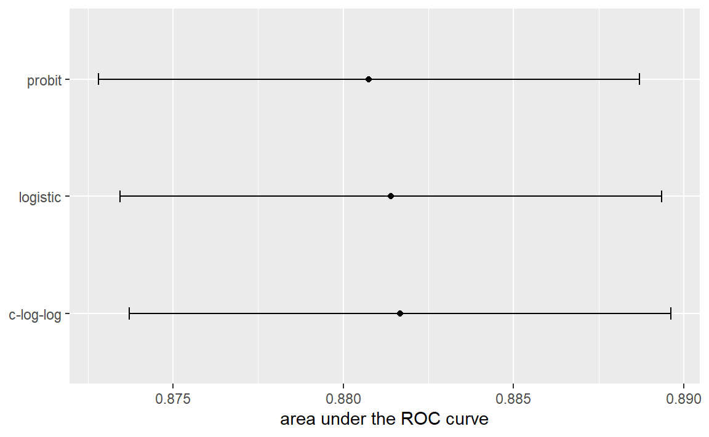
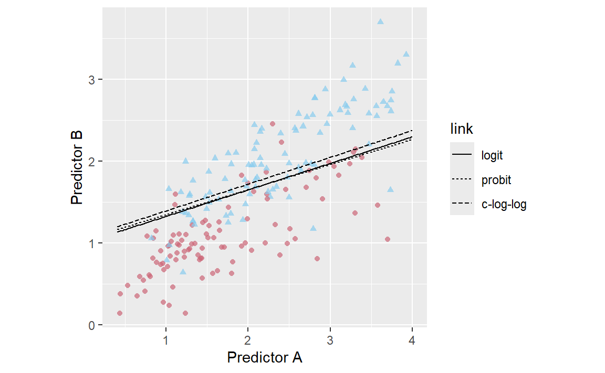
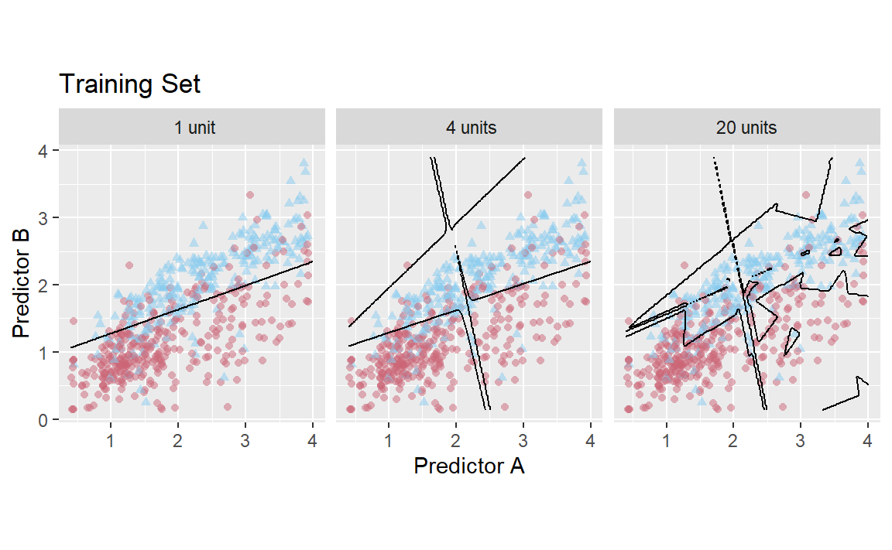
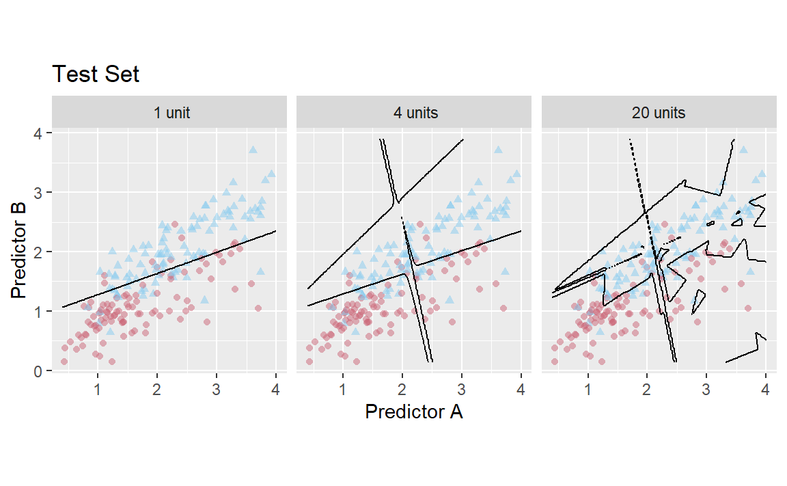
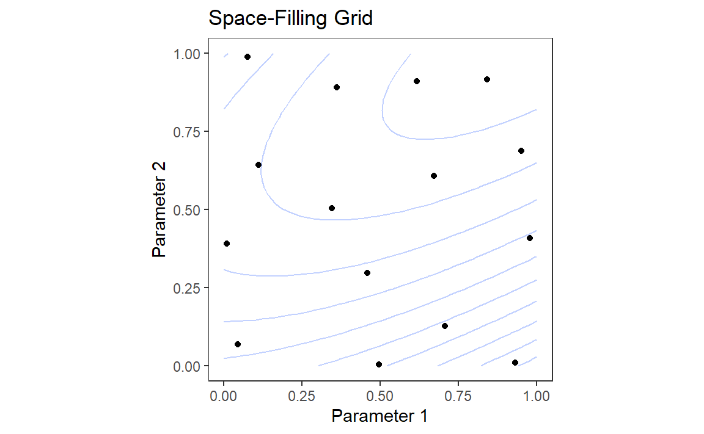
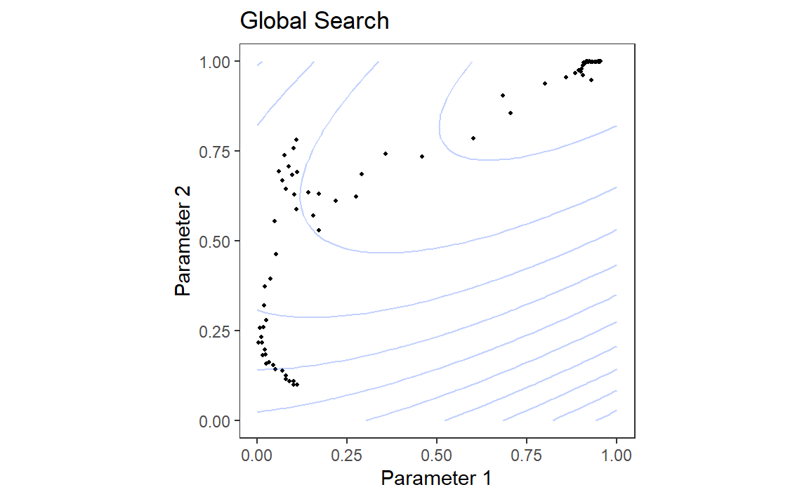

resampled_res%>%filter(.metric=="roc_auc")%>%ggplot(aes(x =mean, y =model))+geom_point()+geom_errorbar(aes(xmin =mean-1.64*std_err, xmax =mean+1.64*std_err), width =.1)+labs(y =NULL, x ="area under the ROC curve")

Figure 3: Means and approximate 90% confidence intervals for the resampled area under the ROC curve with three different link functions
data_grid<-crossing(A =seq(0.4, 4, length =200), B =seq(.14, 3.9, length =200))logit_pred<-logistic_reg()%>%set_engine("glm")%>%fit(Class~A+B, data =training_set)%>%predict(data_grid, type ="prob")%>%bind_cols(data_grid)%>%mutate(link ="logit")probit_pred<-logistic_reg()%>%set_engine("glm", family =binomial(link ="probit"))%>%fit(Class~A+B, data =training_set)%>%predict(data_grid, type ="prob")%>%bind_cols(data_grid)%>%mutate(link ="probit")cloglog_pred<-logistic_reg()%>%set_engine("glm", family =binomial(link ="cloglog"))%>%fit(Class~A+B, data =training_set)%>%predict(data_grid, type ="prob")%>%bind_cols(data_grid)%>%mutate(link ="c-log-log")link_grids<-bind_rows(logit_pred, probit_pred, cloglog_pred)%>%mutate(link =factor(link, levels =c("logit", "probit", "c-log-log")))link_grids%>%ggplot(aes(x =A, y =B))+geom_point( data =testing_set, aes(color =Class, pch =Class), alpha =0.7, show.legend =FALSE)+geom_contour(aes(z =.pred_Class1, lty =link), breaks =0.5, color ="black")+scale_color_manual(values =c("#CC6677", "#88CCEE"))+coord_equal()+labs(x ="Predictor A", y ="Predictor B")

Figure 4: The linear class boundary fits for three link functions
two_class_rec<-recipe(Class~., data =two_class_dat)%>%step_normalize(all_numeric_predictors())mlp_mod<-mlp(hidden_units =tune(), epochs =1000)%>%set_engine("nnet")%>%set_mode("classification")mlp_wflow<-workflow()%>%add_recipe(two_class_rec)%>%add_model(mlp_mod)mlp_res<-tibble( hidden_units =1:20, train =NA_real_, test =NA_real_, model =vector(mode ="list", length =20))for(iin1:nrow(mlp_res)){set.seed(27)tmp_mod<-mlp_wflow%>%finalize_workflow(mlp_res%>%slice(i)%>%select(hidden_units))%>%fit(training_set)mlp_res$train[i]<-roc_auc_vec(training_set$Class, predict(tmp_mod, training_set, type ="prob")$.pred_Class1)mlp_res$test[i]<-roc_auc_vec(testing_set$Class, predict(tmp_mod, testing_set, type ="prob")$.pred_Class1)mlp_res$model[[i]]<-tmp_mod}te_plot<-mlp_res%>%slice(c(1, 4, 20))%>%mutate( probs =map(model, ~bind_cols(data_grid, predict(.x, data_grid, type ="prob"))))%>%dplyr::select(hidden_units, probs)%>%unnest(cols =c(probs))%>%mutate( label =paste(format(hidden_units), "units"), label =ifelse(label==" 1 units", " 1 unit", label))%>%ggplot(aes(x =A, y =B))+geom_point( data =testing_set, aes(color =Class, pch =Class), alpha =0.5, show.legend =FALSE)+geom_contour(aes(z =.pred_Class1), breaks =0.5, color ="black")+scale_color_manual(values =c("#CC6677", "#88CCEE"))+facet_wrap(~label, nrow =1)+coord_equal()+ggtitle("Test Set")+labs(x ="Predictor A", y ="Predictor B")tr_plot<-mlp_res%>%slice(c(1, 4, 20))%>%mutate( probs =map(model, ~bind_cols(data_grid, predict(.x, data_grid, type ="prob"))))%>%dplyr::select(hidden_units, probs)%>%unnest(cols =c(probs))%>%mutate( label =paste(format(hidden_units), "units"), label =ifelse(label==" 1 units", " 1 unit", label))%>%ggplot(aes(x =A, y =B))+geom_point( data =training_set, aes(color =Class, pch =Class), alpha =0.5, show.legend =FALSE)+geom_contour(aes(z =.pred_Class1), breaks =0.5, color ="black")+scale_color_manual(values =c("#CC6677", "#88CCEE"))+facet_wrap(~label, nrow =1)+coord_equal()+ggtitle("Training Set")+labs(x ="Predictor A", y ="Predictor B")tr_plotte_plot

(a) Training set

(b) Test set
Figure 5: Class boundaries for three models with increasing numbers of hidden units. The boundaries are fit on the training set and shown for the training and test sets.
# load("E:/Blog/Books/Tidy Modeling with R/Rdata/search_examples.RData")load("./Rdata/search_examples.RData")grid_plot<-ggplot(sfd_grid, aes(x =x, y =y))+geom_point()+lims(x =0:1, y =0:1)+labs(x ="Parameter 1", y ="Parameter 2", title ="Space-Filling Grid")+geom_contour( data =grid_contours,aes(z =obj), alpha =.3, bins =12)+coord_equal()+theme_bw()+theme( panel.grid.major =element_blank(), panel.grid.minor =element_blank())search_plot<-ggplot(nm_res, aes(x =x, y =y))+geom_point(size =.7)+lims(x =0:1, y =0:1)+labs(x ="Parameter 1", y ="Parameter 2", title ="Global Search")+coord_equal()+geom_contour( data =grid_contours,aes(x =x, y =y, z =obj), alpha =.3, bins =12)+theme_bw()+theme( panel.grid.major =element_blank(), panel.grid.minor =element_blank())grid_plotsearch_plot

(a) Space-Filling Grid

(b) Global Search
Figure 6: Examples of pre-defined grid tuning and an iterative search method. The lines represent contours of a performance metric; it is best in the upper-right-hand side of the plot.
extract_parameter_set_dials(neural_net_spec)#> Collection of 1 parameters for tuning#> #> identifier type object#> hidden_units hidden_units nparam[+]#>
pca_rec<-recipe(Sale_Price~., data =ames_train)%>%# Select the square-footage predictors and extract their PCA components:step_normalize(contains("SF"))%>%# Select the number of components needed to capture 95% of# the variance in the predictors.step_pca(contains("SF"), threshold =.95)updated_param<-workflow()%>%add_model(rf_spec)%>%add_recipe(pca_rec)%>%extract_parameter_set_dials()%>%finalize(ames_train)updated_param#> Collection of 2 parameters for tuning#> #> identifier type object#> mtry mtry nparam[+]#> regularization regularization.factor nparam[+]#> updated_param%>%extract_parameter_dials("mtry")#> # Randomly Selected Predictors (quantitative)#> Range: [1, 74]
penalty()#> Amount of Regularization (quantitative)#> Transformer: log-10 [1e-100, Inf]#> Range (transformed scale): [-10, 0]
了解这一点很重要，尤其是在更改范围时。新的范围值必须采用转换后的单位：
# correct method to have penalty values between 0.1 and 1.0penalty(c(-1, 0))%>%value_sample(1000)%>%summary()#> Min. 1st Qu. Median Mean 3rd Qu. Max. #> 0.1002 0.1796 0.3284 0.4007 0.5914 0.9957# incorrect:penalty(c(0.1, 1.0))%>%value_sample(1000)%>%summary()#> Min. 1st Qu. Median Mean 3rd Qu. Max. #> 1.261 2.081 3.437 4.151 5.781 9.996
如果需要，可以通过trans参数更改尺度。你可以使用自然单位，但要保持相同的范围：
penalty(trans =NULL, range =10^c(-10, 0))#> Amount of Regularization (quantitative)#> Range: [1e-10, 1]